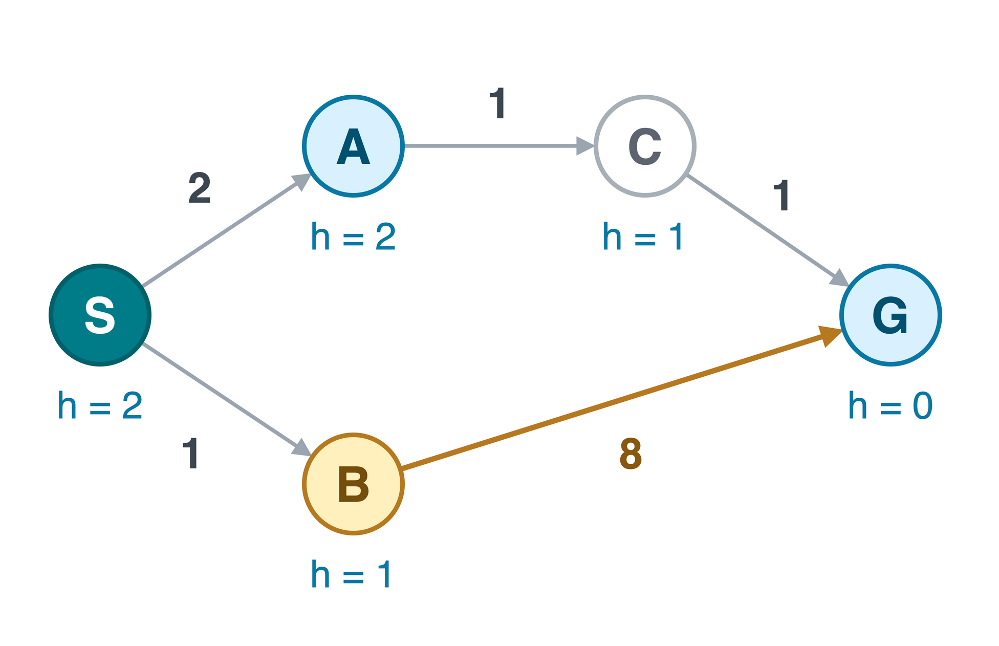
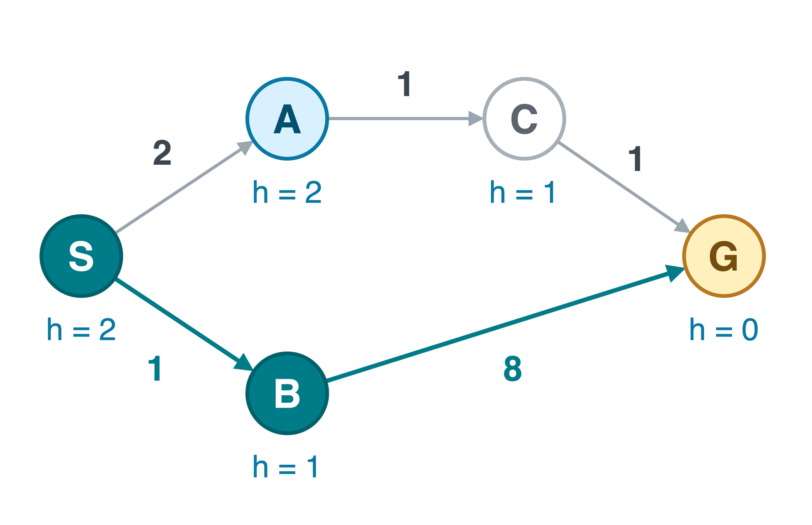
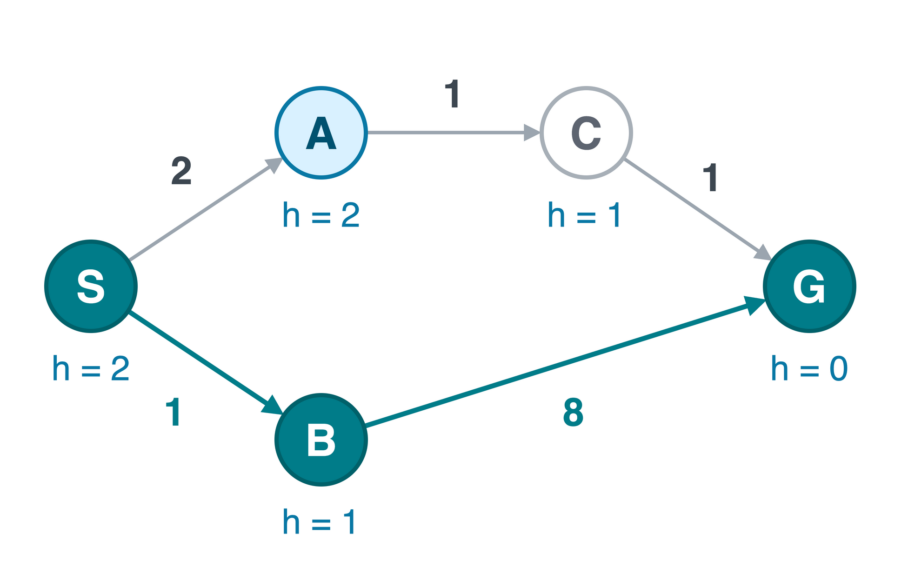
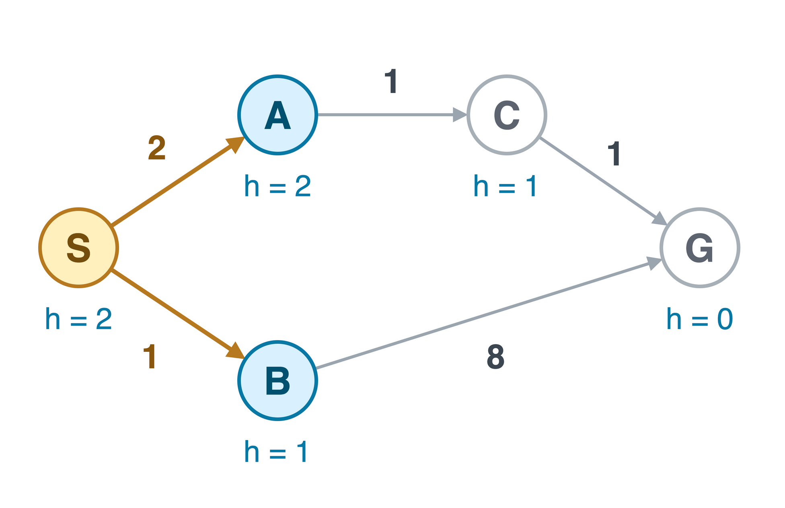
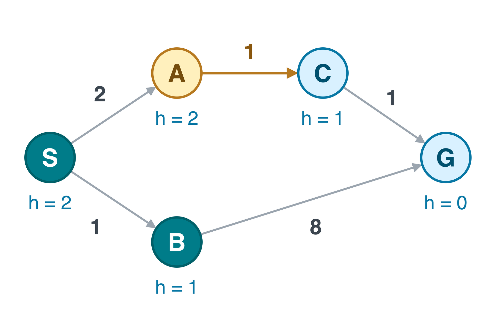
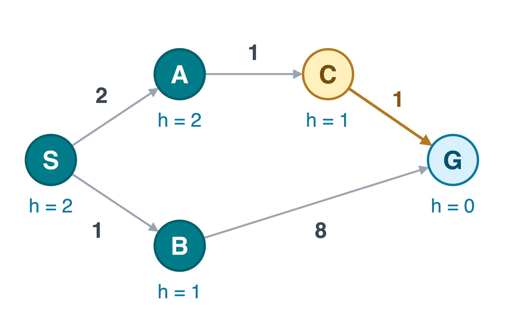
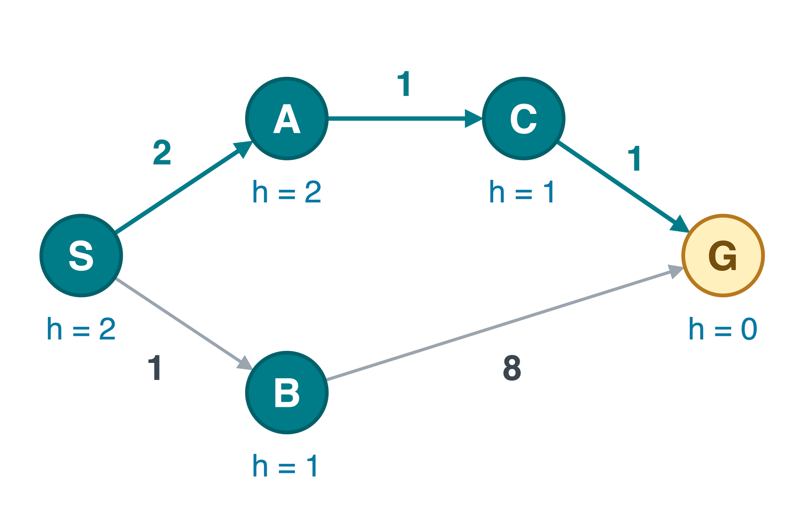
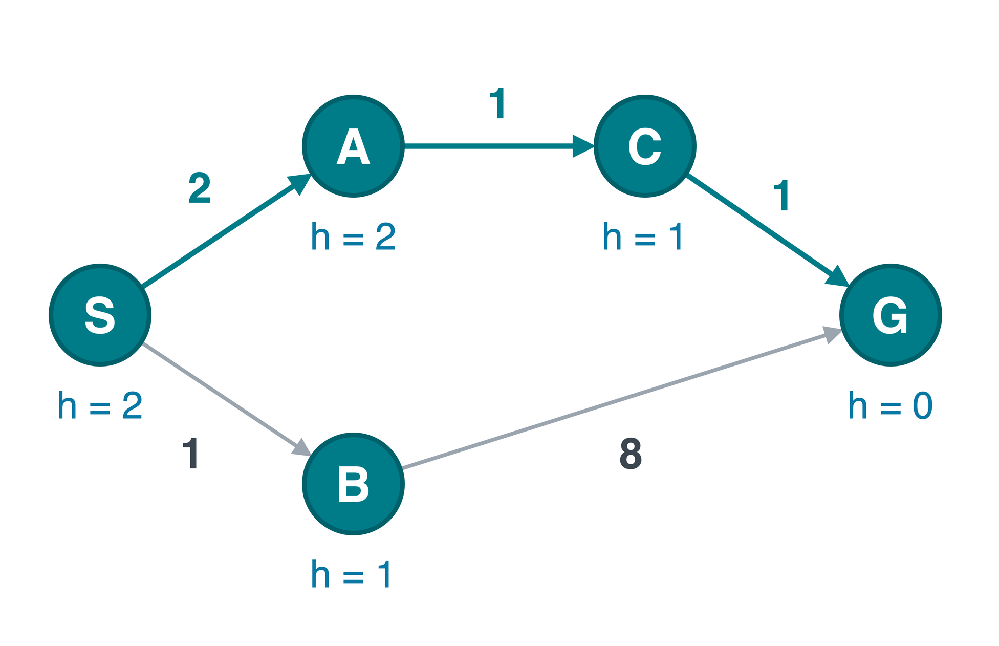

CS 463G & CS 663
(Intro to) AI
Lecture 7: Informed Search
Fall 2026
Cost So Far and Estimated Cost Remaining
Informed search uses a heuristic: an estimate of the remaining cost to a goal.
- g(n): cost of the current route from the start to n.
- h(n): estimated cost from n to the goal.
| Search | Smallest priority first |
|---|---|
| Uniform-cost search (UCS) | g(n) |
| Greedy best-first search | h(n) |
| A* (“A-star”) | f(n)=g(n)+h(n) |

All three can use a min-priority queue. The priority key determines which entry comes out next.
Greedy: Follow the Frontier
Remove the smallest h. Each row shows the frontier after processing the selected node.





Gold edges: routes just discovered. Final frame: returned route.
| Remove | Frontier: node:h |
|---|---|
| Start | [S:2] |
| S | [B:1, A:2] |
| B | [G:0, A:2] |
| G | Return goal, cost 9 |
Estimated distance h determines the order, not route cost g.
S\to B\to G costs 1+8=9. The unexplored route S\to A\to C\to G costs only 4.
A* Frontier Trace
Remove the smallest f = g + h. Keep best g costs separately from queue priorities.






Gold edges: new or improved routes. Final frame: returned route.
| S | A | B | C | G |
|---|---|---|---|---|
| 0 | ∞ | ∞ | ∞ | ∞ |
| 0 | 2 | 1 | ∞ | ∞ |
| 0 | 2 | 1 | ∞ | 9 |
| 0 | 2 | 1 | 3 | 9 |
| 0 | 2 | 1 | 3 | 4 |
| 0 | 2 | 1 | 3 | 4 |
| Remove | Frontier: node:f |
|---|---|
| Start | [S:2] |
| S | [B:2, A:4] |
| B | [A:4, G:9] |
| A | [C:4, G:9] |
| C | [G:4] |
| G | Return goal, cost 4 |
Sorted by f. Stale G:9 omitted.
A* returns S\to A\to C\to G, cost 4. Greedy returned cost 9.
Goal Discovery Is Only a Proposal

After B, a route to G costs 9.
But A is still waiting with f(A)=4.
A frontier path on an optimal route has
f(n)\le C^*,
where C^* is the optimal solution cost.
For nonnegative costs and admissible h, preserve improved paths and test the goal on removal. A suboptimal goal cannot have the smallest f.
Takeaways
- Greedy ranks by h. A* ranks by g+h.
- Admissibility bounds the remaining-cost estimate. Consistency permits finalizing states on removal.
- Compare g costs when improving a route. Reopen states when necessary.
- A heuristic guides exploration. Duplicate handling determines how much repeated work remains.

In the A* notebook, identify the heuristic, queue priority, goal test, and path representation.